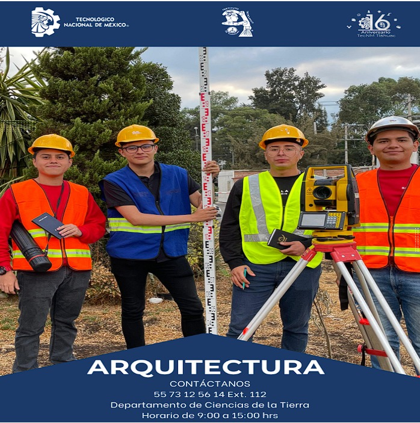

Podemos darle un vistazo al indice del Tecnm Tlahuac 🤖
"LA ESENCIA DE LA GRANDEZA RADICA EN LAS RAÍCES"
"

Podemos darle un vistazo al objetivo general del Tecnm Tlahuac 🤖
"LA ESENCIA DE LA GRANDEZA RADICA EN LAS RAÍCES"
OBJETIVO GENERAL
Formar en competencias, profesionistas líderes con excelencia académica y humanística, capaces de diseñar, gestionar y
construir el hábitat humano con alto desempeño, sustentabilidad y vocación de servicio a la sociedad.
Podemos darle a el perfil de egreso del Tecnm Tlahuac 🤖
PERFIL DE EGRESO1.- Diseñar de manera integral proyectos urbano-arquitectónicos, respetando los marcos normativos
y los criterios de diseño universal, estéticos y espaciales.
2.- Diseñar el interiorismo y paisajismo para crear ambientes confortables y funcionales.
3.- Seleccionar y aplicar, materiales y sistemas constructivos que respondan a una continua calidad e innovación.
4.- Gestionar desarrollos urbanos de manera estratégica y sustentable.
5.- Operar planes de desarrollo urbano con una visión de sustentabilidad y mejora de la calidad de vida.
6.- Seleccionar y diseñar estructuras, instalaciones y sistemas constructivos sustentables.
7.- Administrar el proceso constructivo de las obras urbano-arquitectónicas, con base en la legislación vigente.
8.- Asesorar a los sectores público y privado, en la valoración y conservación del patrimonio, re-arquitectura,
proyectos de inversión inmobiliaria y legislación urbana.
9.- Liderar organismos y grupos inter y multidisciplinarios para la integración de proyectos urbano - arquitectónicos.
10.- Actuar de manera responsable y ética con la sociedad y su entorno.
11.- Desarrollar los valores de responsabilidad, orden y disciplina así como el entusiasmo por continuar su crecimiento
personal y profesional.
Podemos darle un vistazo a la reticula del Tecnm Tlahuac ❤️